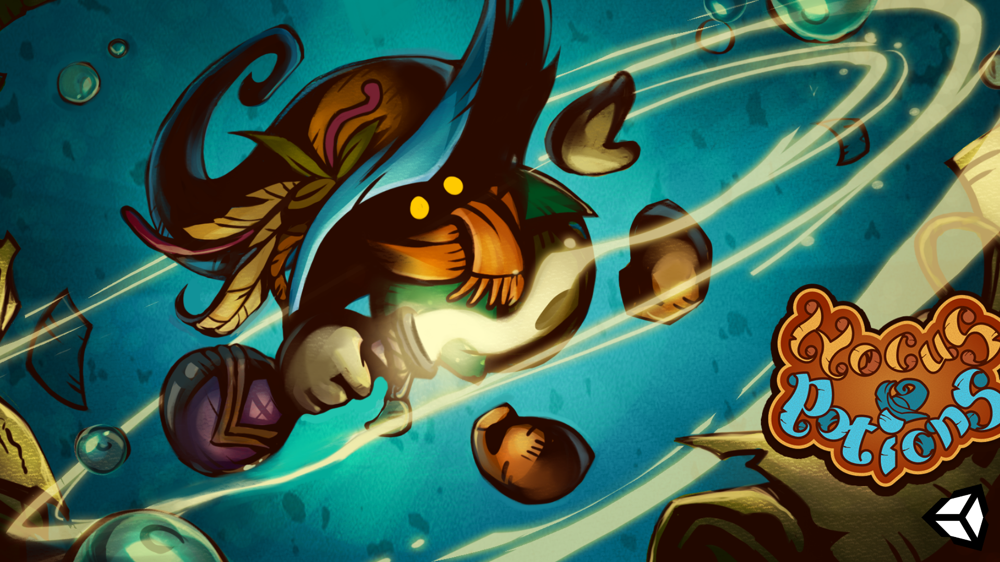
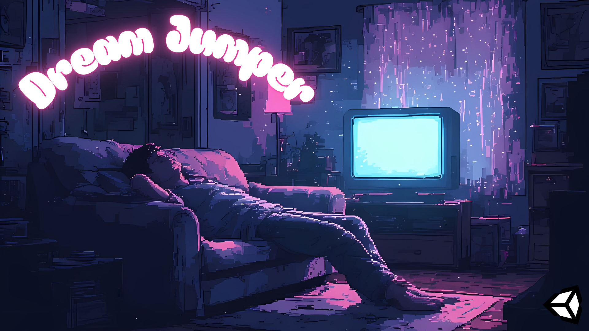

Game Design
Systems, mechanics and level design — the projects where I shaped how a game plays, not just what it says.

Mobile · Producer
Hocus Potion
An apprentice sorcerer’s potion-making game for mobile.
Produced in 2026 — complete, playable start to finish

Design, Level & UI · hero piece
Dream Jumper
A liminal horror walking sim where every dream has its own rules, and dying shows you the dream’s true face.
In progress: a 3-dream demo in Unity.